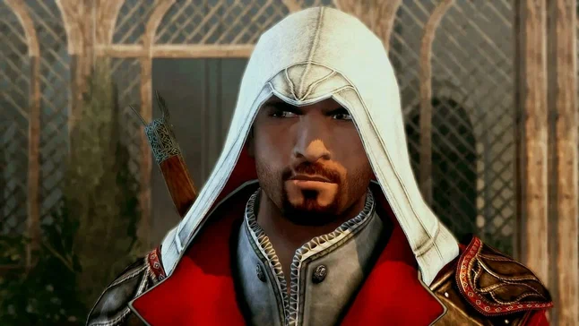
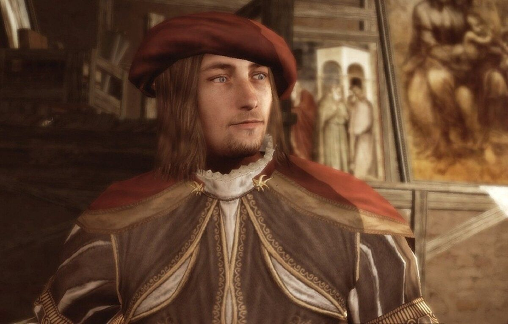
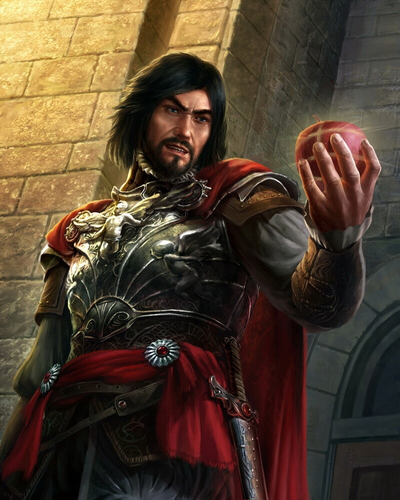
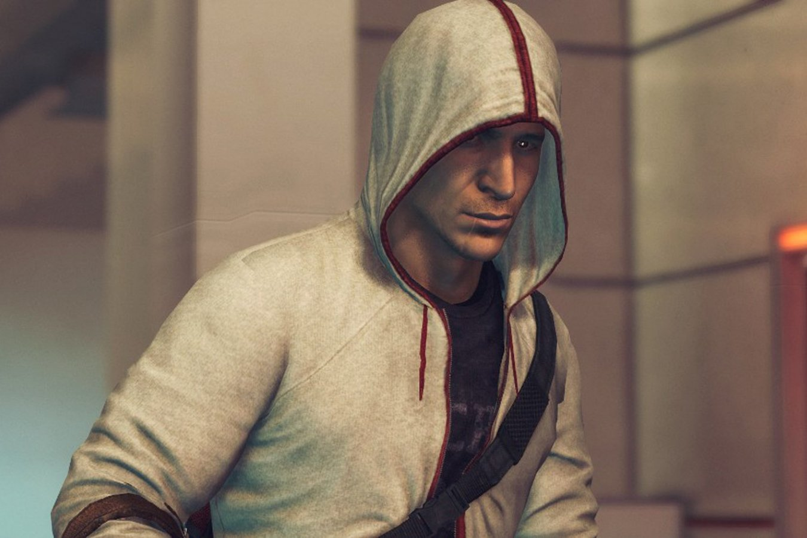
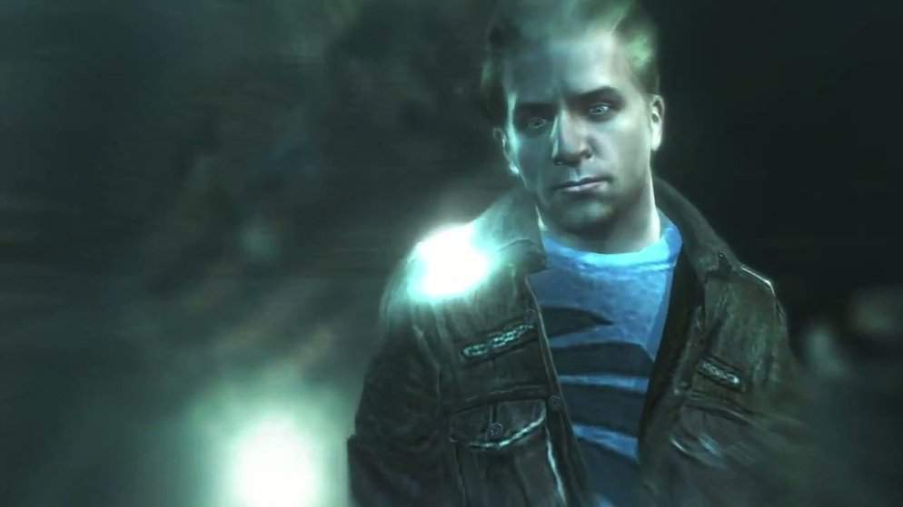

Эцио Аудиторе да Фиренце
Эцио Аудиторе да Фиренце — главный герой игры "Assassin's Creed II" и персонаж в "Assassin's Creed: Brotherhood". Он родился в 1459 году в Флоренции и стал одним из самых известных ассасинов.
Леонардо да Винчи
Леонардо да Винчи — знаменитый итальянский художник, ученый и изобретатель эпохи Ренессанса. В серии игр "Assassin's Creed" он также представлен как важный персонаж и друг Эцио Аудиторе.
Чезаре Борджиа
Чезаре Борджиа — один из самых известных и противоречивых исторических деятелей эпохи Ренессанса, также являющийся персонажем в игре "Assassin's Creed".
Дезмонд Майлс
Дезмонд Майлс — главный персонаж серии игр "Assassin's Creed", который выступает как современный ассасин с уникальной способностью пользоваться воспоминаниями своих предков.
Клэй Качмарек
Клэй Качмарек, так же известный как Объект №16 — Ассасин, был похищен компанией Абстерго для проведения опытов в Анимусе. Сошел с ума и совершил самоубийство. Но перед смертью он создал свою цифровую копию и поместил её в Анимус. Может управлять несколькими функциями Анимуса, помогая Дезмонду.